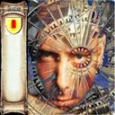

Forums galactiques > Taverne galactique : lieu de discussion informel > Qui a participé a la beta1?
oui!j'étais super célebre! | 24 | |
oui. | 21 | |
non. | 17 | |
la beta1??? | 2 | |
ahhh...la bonne vieille réponse 5. | 7 | |
Total : 71 vote(s) | ||
Aipi 19/11 ETU 19:15 | Copernik je ne veux meme plus entendre le nom de cette ancien commandant de "merde" que j'étais et j'en ai honte :( C'est pourquoi je ne divulgue pas mon ancien nom de commandant, certains le savent et j'espere qu'ils se tairont. |
Necrid 19/11 ETU 19:21 | Necrid, un petit Commandant de la béta 1 né dans le système 78, inconnu de tous mais qui fonda avec les Commandants L'Atlante et etic ce qui fut la préfiguration de la Corporation Bleue, l' "Union des Mondes". Il fut aussi membre des coalitions "Conseil National de la Résistance" (dirigée par le Commandant Alcibiade) et "Fédérations Unies" (dirigée par le Généralissime primarque). A son départ en vacances, voilà quelle était l'étendue de son territoire : [16] Santanni [58] Lyonesse [58] Lucrèce [58] Mandress [58] Mores [58] Lemul [58] Askone [78] Asperta [78] Daribow [78] Radole [78] Iss [78] Ifni [78] Terel [78] Bunde [78] Korell [78] Anacréon [78] Smyrno [78] Konom [78] Terminus [78] Horleggor [78] Port [78] Mnémon [78] Kalgan [78] Siwenna [78] Véga [78] Wanda [78] Loris [88] Filia [96] Synnax [122] Rossem [122] Tazenda |
Ta Brioche 19/11 ETU 19:31 | Le chef de la resistance alcibiade qui a d ailleurs rejoint greg dans son apocalypse... |
Ta Brioche19/11 ETU 19:31 | D ailleurs je suis un peu surpris d apprendre qu Etic m a detruit tout en finissant derriere moi au score! |
Morcar Baughlir 19/11 ETU 21:38  | Tout simplement parceque le score s'est immobilisé à 3 jour de la fin. Car, dans ce cas, en utiliisant votre propre définition de "destructeur", vous n'avez pas non plus détruit Primarque, qui étais bien mieux classé que vous. |
Devan 20/11 ETU 01:26 | J'étais aussi dans la V1 (Arkk)...Pour que je devienne célebre il aurait fallu que je puisse servir à quelque chose durant la guerre de l'alliance sombre... Mais avec un profil d'alliantiste tout pourri, le seul truc que je pouvais faire, c'était faire le malin à l'AG. :) Je me demande si j'ai un jour dépassé la 10eme place... |
Ta Brioche20/11 ETU 02:58 | Vous vous souvenez quand vous m avez recrute dans l alliance sombre Arkk? Mes premiers pas! |
Archimage Antonophix 20/11 ETU 09:19 | Arkk que du bonheur, et oui vous aviez dépasser la 10 eme place car, vous avez été septiéme il me semble. |
Prophéte 20/11 ETU 09:22 | moi le mon moment que je préfére c'est quand vous vous ètes flingué. |
Morcar Baughlir20/11 ETU 10:17 | Je vous rassure Arkk, les seuls personnes a avoir atteind votre cote de célébrité durant la V1 étaient Fregger, FlyingBull, Fedayn, Primarque, l'Atlante, aller... disons le... Greg, et Obiwan Kenobi (il faut reconnaitre, le commandant le plus haït de la galaxie, et par la même occasion le plus célèbre...) Bon, d'accord, ça fait du monde, mais aux vues du nombre de commandant, c'est un bon résultat tout de même ^^ |
primarque 20/11 ETU 23:34 | Arkk, si il ne fut pas un guerrier, reste dans mes souvenirs le plus grand diplomate que j'ai jamais vu, quand à Fregger, il m'à déchu d'un revers de botte dans mes débuts, ce qui ne lui fut pas bien dur, et il fut le plus grand guerrier que la galaxie ait connu. Quand au meilleur trip que j'ai tapé, je crois que c'était à la fin quand je collectionnait les kamis et que je "leur donnait des petits noms" comme disait Morcar. C'est vrai quoi, au 5 millionéme, fallait les nommer our s'y retrouver, alors y'avait le kami sauteur, le kami jongleur, le kami gragnon, l'escouade d'élite anti obiwan, l'escouade toute pourri anti-boulet ( pas besoin de mieux pour cela...) etc.... |
Devan21/11 ETU 11:11 | Vosu êtes bien sympa tous...Un truc qui est sur, c'est qu'on a un paquet d'excellents diplomates dans la beta 2...Je pense spontanément à Morcar ou à feu-Nenel, mais bien d'autres ont investi l'assemblée pour m'ont plus grand plaisir...C'est quand même un sacré bon jeu... |
| Vlad Ivostock III  21/11 ETU 14:06 | C'est vrai que je suis sympa. Je vous remercie de cette remarque tout a fait pertinente et surtout juste, et je vous offre un verre de notre traditionnel jus de stimulo à la taverne! |
Ta Brioche21/11 ETU 17:53 | Je suis content que mon ordurisme soit reconnu a sa juste valeur! Quant a votre escouade d elite cher Primarque il semblerait qu elle se soit egaree en chemin hihi. |
Forums galactiques > Taverne galactique : lieu de discussion informel > Qui a participé a la beta1?